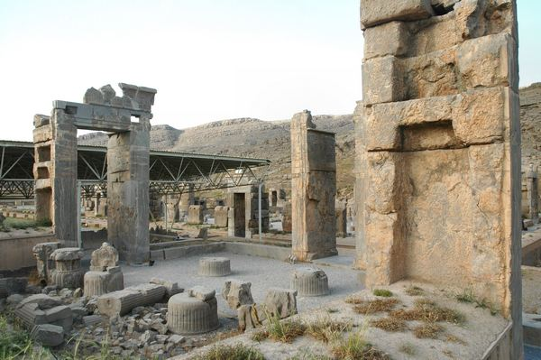
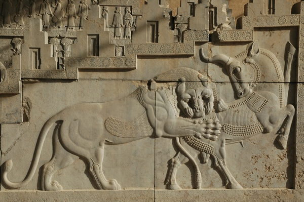

Central Palace or known as Tripylon, means triple gate. The building was a central room with passages to the Apadana Hall of Hundred Columns and the Palace of Xerxes. Historians believe this was a meeting center where the king could his advisers. Some also call it the Council hall.
 